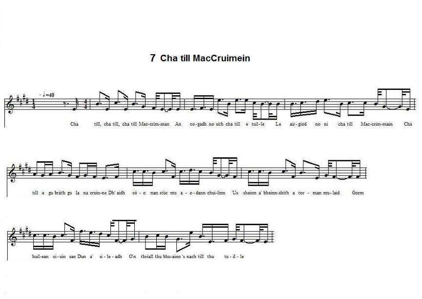
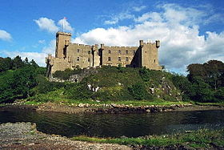
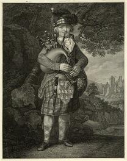
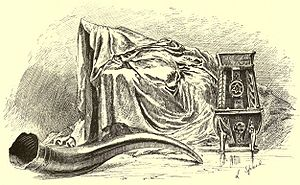

Cha till MacCruimein
No more shall McCrimmon return - Tu pars, McCrimmon
A Lament for McCrimmon - Chant funèbre pour McCrimmon
probably by Dr Norman McLeod (imitated from a poem by Sir Walter Scott)
Tune (midi)
Tune (mp3)
"Cha till MacCruimein"
as sung by Kate Laing

Albyn Anthology * Pibroch tune * Orain na h-Albain * South Uist * Lewis * Harris * Drawing Room
Click to hear the melodies (sequenced by Christian Souchon)
|
To the tune:
As sung by Kate Laing and recorded by Francis Collinson and Calum Iain McLean for the "School of Scottish Studies" in 1953 (Track ID - 3128). Permanent Link - http://www.tobarandualchais.co.uk/fullrecord/3128/1. This version N°7 is a typical example of drawing-room music, such as it appears in many 19th and early 20th century song-books, in particular in Colin Brown's "Thistle" (edition of 1883, p.73). An earlier production of this type is Song N°3 included in the collection "Orain na h-Albain" (1848). All oral versions of this tune are more or less closely related to a pibroch tune known as "cha till mi tuille" which is associated with McCrimmon's name. Sir Walter Scott asserts that the tune was commonly used to accompany the departure of emigrants, which prompted another adept of post-McPhersonic romanticism, Dr Norman McLeod to title his translation of Scott's poem "Cumhadh an Fhogarraich" (The Exile's Lament). The earliest source for the "piobaireachad" is the 1784 Patrick McDonald Collection ( Melody N°2 ), where it appears under the title "Cha till mi tuille, Never more shall I return, A bagpipe lament", transcribed, as stated in the introduction from an "eminent performer" of Lochaber. The ground melody is followed by several variations. The tune also appears in Collin Campbell's "Nether Lorn Canntaireachd" MS dating from about 1800; then in the second volume of Albyn's Anthology, in 1818, where it is modified to accommodate the words of Walter Scott's poem (Melody N°1) . These indications, the other versions of the tune and nearly all the information given on the present page are borrowed from an exhaustive study on "Traditional and Bogus Elements in MacCrimmon's Lament" , which was published by Dr Virginia Blankenhorn in "Scottish Studies" (volume 22, pages 45 to 66), the Journal of the School of Scottish Studies of the University of Edinburgh, in 1978. Dr Blankenhorn states, in the concluding chapter of her essay, that it is Colin Brown's air, set to part of the English translation of Dr Norman McLeod's poem, which is mostly recorded by modern folk-song singers , though neither tune nor text "demonstrates any of the qualities of authentic Scottish music or poetry". |
   |
A propos de la mélodie:
Interprétée par Kate Laing et enregistrée par Francis Collinson et Calum Iain McLean pour la "School of Scottish Studies" en 1953 (N° de matrice - 3128). Lien permanent - http://www.tobarandualchais.co.uk/fullrecord/3128/1. Cette version N°7 est un exemple typique de musique de salon, telle qu'on en trouve dans de multiples recueils de chants du 19ème et du début du 2oème siècle. Elle ressemble à celle du recueil de Colin Brown, "The Thistle" (édition 1883, p.73). Une production plus ancienne de ce type est le Chant N°3 qui figure dans le recueil "Orain na h-Albain" (1848). Les versions chantées de cette mélodie sont toutes plus ou moins étroitement apparentées au pibroch (air de cornemuse) intitulé "Cha till mi tuille" , indissociablement lié au nom de McCrimmon. Walter Scott nous apprend que cet air était fréquemment joué lors du départ d'émigrants, ce qui incita un autre adepte du romantisme post-Macphersonien, le Rév. Norman McLeod Sr. à intituler sa traduction du poème de Scott "Cumhadh an Fhogarraich" (La complainte de l'exilé). La plus ancienne source où l'on trouve ce "piobaireachad" est le recueil du Rév. Patrick McDonald (1784) ( Mélodie N°2 ), où il figure sous le titre "Cha till mi tuille, Jamais plus je ne reviendrai, Elégie pour cornemuse", transcrit, est-il dit dans l'introduction de l'ouvrage à partir du jeu d'un "éminent sonneur" du Lochaber. La mélodie de base est suivie de nombreuses variations. On la trouve également dans le manuscrit de Collin Campbell, le "Nether Lorn Canntaireachd" MS, qui date d'environ 1800, ainsi que dans le second volume de l' "Albyn's Anthology", de 1818, où elle est modifiée pour accompagner le texte du poème de Walter Scott (Mélodie N°1) . Ces indications, les autres versions de la mélodie et presque toutes les informations contenues dans la présente page sont tirées d'une étude exhaustive des "Eléments traditionnels et postiches ayant trait à l'Elégie de McCrimmon" , publiés en 1978 par le Dr Virginia Blankenhorn dans "Scottish Studies" (volume 22, pages 45 à 66), l'organe de la "School of Scottish Studies" de l'Université d'Edimbourg. Le Dr Blankenhorn note, à la fin de son étude, que c'est la mélodie de Colin Brown, accompagnant des extraits du poème anglais de Norman McLeod qui est le plus souvent enregistrée par les chanteurs modernes de folksong , bien que ni l'air ni la chanson "ne fassent la démonstration d'aucune des qualités de l'authentique musique ou poésie écossaises". |

|
Chorus: No more, no more, no more shall McCrimmon return In war nor in peace he'll return no more Neither with wealth nor property Shall McCrimmon return until the Last Day 1. The mist of the cliffs has enshrouded the Coolins And the Banshee has crooned her cry of sadness; Kindly blue eyes in the Castle are weeping; Since you journeyed from us, and shall never return. 2. The sea is at last full of sorrow and sadness The boat is under sail but will not set out The roar of the waves, with joyless sound, Is saying you've gone to return no more. 3. The breeze of the glen is gently moving: Each brook and burn is slowly flowing; The birds of the sky are mournful midst branches Lamenting that you left, and shall never return. 4. Your music shall not be heard in the castle at evening Nor shall the echo of the ramparts joyfully answer it: Every youth and maiden, without music or sport, Since you journeyed from us, nevermore to return. "Co-chruinneadhadh de dh'Oranan Taoghta", 1836. Norman McLeod's own translation. |
Sèist: Cha till, cha till, cha till Mac Crimman An cogadh no sìth cha till e tuille Le airgiod no ni cha till Maccrimmain Cha till e gu bràth gu la na cruinne 1. Dh'iadh cèo nan stùc mu aodann chuilinn 'Us sheinn a' bheinn-shith a torman mulaid Gorm shuilean ciuin san Dun a' sileadh O'n thriall thu bhuainn 's nach till thu tuille 2. Tha'n fhairge fa-dhèoigh làn broin us mulaid Tha'm bàta fo sheól, ach dhiult i siubhal Tha gairich nan tonn le fuaim neo-shubhach Ag ràbh gun d'fhalbh 's nach till thu tuille 3. Tha osag nam beann gu fann ag imeachd Gach sruthan 's gach allt gu mall le bruthach Tha ealtainn nan speur feadh geugan dubhach A caoidh gu'n d'fhalbh 's nach till thu tuille 4. Cha chluinnear do cheòl san Dun mu fheasgar 'Smac-talla nam mùr le muirn ga fhreagairt Gach fleasgach us òigh, gun cheol gun bheadrach O'n thriall thu bhuainn, 'snach till thu tuille "Co-chruinneadhadh de dh'Oranan Taoghta", 1836. A poem by Norman McLeod Sr (Imitation of a poem by Sir Walter Scott). |
Refrain: Tu pars, tu pars, tu pars, McCrimmon, Mais, les poches vides et sans argent, Que la guerre ait pris fin ou non, qu'importe, Tu ne reviendras qu'au jour du Jugement! 1. Les monts Cuillinns sont voilés de brume. Entends la Banshee qui gémit au loin! De beaux yeux bleus pleurent à Dunvegan Celui qui part et ne reviendra point. 2. La mer mugit, O comme elle est triste! La voile hissée voulait-elle de toi? Les vagues dans leur tapage persistent "O passager, tu ne reviendras pas..." 3. La rumeur des collines s'éloigne: C'est le bruissement des eaux des ravins Auquel les chants des oiseaux se joignent: L'élégie de qui ne reviendra point. 4. A Dunvegan ce soir ta musique Que répétaient les remparts se tait. Dames, seigneurs, ce silence est tragique: Tu pars, mais tu ne reviendras jamais. (Trad. Christian Souchon (c) 2015) |
|
[1]
The McCrimmons
(Gaelic: MacCruimein) were a Scottish family, pipers to the chiefs of Clan McLeod for several generations. The hereafter addressed Donal Bàn belonged to the fourth generation of that family. The MacCrimmon kindred were centred at Borreraig, near the Clan MacLeod seat at Dunvegan on the Isle of Skye. At Borreraig the McCrimmons taught at the piping colleges endowed by McLeod, one of the best known in the Highlands of Scotland. The 17th Century was the high point of their acclaim, with their last pupil, a McArthur, graduating in the 1780s. The McCrimmons, especially Padruig Mor McCrimmon who held office from 1640 to 1670, contributed significantly to the "ceol mor" form of pipe music. According to a Gaelic inscription on a memorial cairn erected by Clan Societies in 1933, the School of Music existed from 1500 till 1800. [2] Did Donald Bàn McCrimmon compose "Cha till mi tuille"? During the Jacobite Rising in 1745 the chief of Clan McLeod supported the Hanoverians against the Jacobites. As McLeod's piper, Donald Ban McCrimmon (Dòmnhall/Dòmnhull Bàn MacCruimein – "bàn" meaning "fair-haired") took an active part in the conflicts against the Jacobite forces. Donald Ban was eventually killed during the so-called "Rout of Moy" , when on February 18, 1746, with the Jacobites marching on Inverness, Lord Loudon led 1,500 men in an attempt to capture Charles Edward Stuart. When the Government troops advanced upon Moy in the dark they encountered a watch made up of only a handful of McKintoshes. In the encounter a single shot was fired and Donald Ban was instantly killed. With the death of their piper, panic quickly spread and Loudon's forces fled. It is sometime during this period that Donald Bàn is supposed to have composed the pipe air (piobaireachd) "Cha till mi tuille" which is attributed to him. Sir Walter Scott gives one version of the many stories supposed to record the circumstances of the composition in a note to his poem "Mackrimmon's lament" published in "Albyn's Anthology" (1818): "Mackrimmon, hereditary piper to the Laird of Macleod, is said to have composed this Lament when the Clan was about to depart upon a distant and dangerous expedition. The minstrel was impressed with a belief, which the event verified, that he was to be slain in the approaching feud; and hence the Gaelic words, "Cha till mi tuille; ged thillis Mac Leod, cba till Macrimmon; - I shall never return; although Macleod returns yet Mackrimmons shall never return! The piece is but too well known, from its being the strain with which the emigrants from the West Highlands, and Isles, usually take leave of their native shore." As stated at the site www.scotland.org.uk/scottish-historical-figures/rob-roy-macgregor, this account is contradicted by another tradition concerning the famous Rob Roy . At the end of 1734, Rob Roy McGregor was in his home at Inverlochlarig, at the head of the Glen of Balquhidder. All accounts are in agreement on his last words. "It is all over. Put me to bed. Call the piper. Let him play 'Cha till mi tuille'." While the piper played the lament "I shall return no more", Rob Roy died. This happened about a decade before Donald Bàn McCrimmon died and the lament was composed. Therefore, it seems that words along the lines of "Cha till mi tuille" were already in the traditional practice for laments. [3] Sir Walter Scots' poem and Dr. Norman McLeod's translation As already mentioned, in 1818 Walter Scott published the following poem: |
[1]
Les McCrimmon
(en gaélique, "MacCruimein") étaient sonneurs de cornemuse des chefs du Clan McLeod depuis des générations dont le Donal Bàn dont il va être question représentait la quatrième. On trouvait des McCrimmon surtout autour de Borreraig, près du château des McLeod, Dunvegan sur l'Île de Skye. C'est là qu'ils enseignaient la cornemuse dans une école financée par les McLeod, l'une des meilleures des Highlands. C'est au 17ème siècle qu'elle parvint au sommet de sa gloire et son dernier élève, un certain McArthur, obtint son diplôme dans les années 1780. L'apport des McCrimmon, surtout celui de Padruig Mor McCrimmon qui exerça entre 1640 et 1670, dans l'art du "ceol mor" est considérable. Si l'on en croit l'inscription gaélique du cairn érigé par des sociétés claniques en 1933, cette école de musique fonctionna pendant trois siècles à partir de 1500. [2] Donald Bàn McCrimmon est-il l'auteur de "Cha till mi tuille"? Lors du soulèvement de 1745, the chef du Clan McLeod prit le parti des Hanovriens contre les Jacobites. En tant que sonneur des McLeod, Donald Bàn McCrimmon (Dòmnhall/Dòmnhull Bàn MacCruimein – où "bàn" veut dire "blond") prit une part active aux opérations dirigées contre les Jacobites. Donald Ban perdit la vie au cours de la fameuse "déroute de Moy" , le 18 février 1746, alors que les Jacobites marchaient sur Inverness, quand Lord Loudon à la tête de 1.500 hommes tenta de s'emparer de Charles Edouard Stuart. Alors que les troupes gouvernementales approchaient de Moy en pleine nuit, elles rencontrèrent une garde composée d'une poignée de McKintosh. Un seul coup de feu fut tiré et Donald Bàn tomba raide mort, ce qui provoqua aussitôt la panique parmi les hommes de Loudon qui prirent la fuite. C'est à cette époque que Donald Bàn est réputé avoir composé le morceau pour la cornemuse (piobaireachad) intitulé "Cha till mi tuille" qu'on lui attribue. Walter Scott donne une des multiples versions de l'histoire supposée des circonstances de cette composition dans une note accompagnant son poème "L'élégie de Mackrimmon" paru en 1818 dans "Albyn's Anthology": "Mackrimmon, sonneur héréditaire du Laird de Macleod, est réputé avoir composé cette élégie, alors que le Clan allait partir pour une lointaine et dangereuse expédition. Le ménestrel était persuadé, et les événements lui donnèrent raison, qu'il serait tué au cours de l'escarmouche que l'on préparait. De là la phrase gaélique, "Cha till mi tuille: ged thillis Mac Leod, cba till Macrimmon - Je ne reviendrai pas; même si le clan Macleod en revient, Mackrimmon, lui, ne reviendra jamais!" Cet air est hélas trop connu, car c'est celui qu'entonnent les émigrants des Hautes Terres et des Hébrides quand ils voient s'éloigner les côtes de leur patrie." Selon le site www.scotland.org.uk/scottish-historical-figures/rob-roy-macgregor, cette histoire est contredite par une autre tradition, relative, celle-là à l'illustre Rob Roy . Fin 1734, Rob Roy McGregor était chez lui à Inverlochlarig, au fond du Glen de Balquhidder. Tous les témoignages sur ses dernières paroles concordent. "Tout est fini. Mettez-moi au lit. Faites venir le sonneur. Qu'il joue 'Cha till mi tuille'" . C'est donc aux accents de "Jamais plus je ne reviendrai" qu'il rendit l'âme. Dix ans avant la mort de Donald Bàn McCrimmon , le morceau était déjà composé et il apparaît que des paroles funèbres accompagnant la mélodie "Cha till mi tuille" appartenaient déjà à la tradition. [3] Le poème de Walter Scots et la traduction du Rév. Norman McLeod Comme on l'a dit plus haut, en 1818 Walter Scott publia le poème qu'on va lire: |
||||
|
Mackrimmon's Lament By Sir Walter Scott (Albyn's Anthology, 1818) 1. Macleod's wizard flag (*) from the grey castle sallies, The rowers are seated, unmoored are the galleys; Gleam war-axe and broad-sword, clang target and quiver, As Mackrimmon sings "Farewell to Dunvegan forever!" 2. "Farewell each tall cliff, on which breakers are foaming; Farewell each dark glen, in which red deer are roaming; Farewell lonely SKYE; to lake, mountain and river, Macleod may return - but, Mackrimmon shall never!" 3. "Farewell the bright clouds, that on Quillan are sleeping; Farewell the bright eyes, in the Dun that are weeping; To each minstrel's delusion farewell- and for ever - Mackrimmon departs - to return to you never!-" 4. "The "Banshee" (*)'s wild voice sings the death-dirge before me The pall of the dead for a mantle hangs o'er me- But, my heart shall not flag, and my nerves shall not shiver, Tho' devoted I go - to return again never! -" 5. "Too oft shall the notes of Mackrimmon's bewailing Be heard when the GAEL on their exile are sailing Dear land! To the shores, whence unwilling we sever, Return, return, return shall we never; -" 6. "Cha till, cha till, cha till sin tuille! Cha till, cha till, cha till sin tuille! Cha till, cha till, cha till sin tuille! Ged thillis MacLeod, cha till Mackrimmon!" |
Macruimein no Cumhadh an Fhògarraich
("An Taechdaire Gaelach", Vol. 2, 1830) 1. Bratach bhuadhail (*) Mhicleoid o'n tùr mhòr a' lasadh, 'S luchd-iomraidh nan ràmh 'greasadh bhàrc thair a' ghlas chuain; Bogha, sgiath, 's claidheamh-mòr, 's tuagh gu leòn, airm nam fleasgach, 'S Macruimein 'cluich cuairt - " Soraidh bhuan do Dhun-Bheagain!" 2. Slàn leis gach creag àrd ris 'm bheil gàirich àrd-thonnan - Slàn leis gach gleann fas 's an dean cràchd-dhaimh an langan - Eilein Sgiathnaich àidh! slàn le d' bheanntaibh 's guirm' fireach; Tillidh, dh'fhaoidte, Macleoid, ach cha bheò Macruimein! 3. Soraidh bhuan do'n gheal-cheò a tha còmhdachadh Chuilinn! Slàn leis gach blàth shùil 'th'air an Dun, 's iad a' tuireadh; Soraidh-bhuan do'n luchd-ciùil 's tric chuir sunnd orm a's tioma! Sheòl Macruimein thar sail' 's gu la bhrath cha phill tuille! 4. Nualan allt na piob-mhòr, cluiche marbh-rann an fhilidh, Agus dearbh-bhrat a' bhais mar fhalluing aig' uime; Ach cha mheataich mo chrìdh', a's cha ragaich mo chuislean, Ged dh'f halbham le m' dheoin 's fios nach till mi chaoidh tuille! 5. 'S tric, a chuinnear fuaim bhinn, caoidh thiom-chri' Mhicruimein, 'N uair 'bhios Gàidheil a' falbh, thair na fairge 'g an iomain; O chaomh thir ar gràidh, o do thràigh 's rag ar n-imeachd, Och! cha till— cha till— Och! cha till sinn tuille ! |
Elégie de Mackrimmon
Par Walter Scott (Albyn's Anthology, 1818) 1. Du fort gris des MacLeod l'étendard de la Fée (*) Est emporté: Rameurs en place! Ancre levée! Luisez haches, épées! Sonnez, targes, tambours! Mackrimmon prend congé de Dunvegan, et pour toujours!: 2. "Adieu, haute falaise où les brisants écument; Adieu, sombres glens que hantent les biches brunes; Adieu, lointaine SKYE, lacs, montagnes, torrents, "MacLeod reviendra - Mackrimmon n'en fera point autant!" 3. "Adieu, clairs nuages, dormant sur les Cuillins; Adieu, chers yeux clairs, qui pleurez sur la courtine; Adieu, rêveries des ménestrels - à jamais - Mackrimmon s'en va - Jamais plus vous ne le reverrez!-" 4. "La "Banshee" (*) me hurle bien fort son chant de deuil! La cape des morts me couvre comme un linceul- Ne flanche pas mon cœur, je suis maître de moi. Je dois partir - mais je sais que je ne reviendrai pas! -" 5. "Trop souvent la plainte de Mackrimmon sera Entendue, quand le GAËL pour l'exil partira Ecosse, que la mort dans l'âme nous quittons, Jamais, plus jamais, à tes rives nous n'aborderons! -" 6. "Cha till, cha till, cha till sin tuille! Cha till, cha till, cha till sin tuille! Cha till, cha till, cha till sin tuille! Ged thillis MacLeod, cha till Mackrimmon!" |
|||
|
When this poem was published, in 1818, in the second volume of "Albyn's Anthology", it was set to a tune (Melody N°1) identifiable as the "urlar" (ground melody) of the bagpipe air "Cha till mi tuille". Sir Walter Scott referred to the bagpipe air in the short comment above. We may assume that his statement (that McCrimmon was convinced he was to be killed) was not a product of his imagination and that he could have heard the story and gathered the elements of his poem during his visit at Dunvegan in 1814, or from some Highland correspondent. (*) The "wizard flag" was a gift to some ancestral McLeod from a fairy maiden (a "banshee"), which he might wave, on three occasions, when he or his clan were in danger. Though McLeod betrayed the fairy and married a human lass, the clan was twice victorious, when the flag was waved. To the present day "a last tune is saved in the old fiddle". The "banshee" in the first line of stanza 4 was lost in Gaelic translation (marbh-rann an fhilidh= lament of the bards)! However, in a note, Scott's poem is presented as a translation of the Gaelic version!: [4] Norman McLeod's second poem The poem at hand ("Db'iadh ceo nan stuchd mu aodann Chuilinn...") was first published by John McKenzie, in 1836, with slight differences in words and spelling ("Cha phill, M'Cruimen" instead of "cha till Mac Crimman"...), in a small volume entitled "Co-chruinneachadh de dh'Oranan Taoghta: A Collection of the Most Popular Gaelic Songs" (p.71). A note was appended to the affect that it was taken from "an old MS ". Though it is possible that John McKenzie himself wrote it, it is highly probable that Rev. Norman McLeod authored both the poem and its translation. As stated by Dr Virginia Blankenhorn: "The author of this poem is clearly in debt to Scott for a good many of his images [galleys, mist-enshrouded Cuillin, wailing banshee, weeping woman in the castle...], not to mention the device of the chorus which is taken on wholesale from the other poem, ... the reiteration of "cha till e tuille" inclusively." Besides, in the afore-mentioned comment to Scott's poem in "Select English poems with Gaelic translations" (1859), the present poem is introduced as follows: "Dr McLeod of St. Columba gave another version of this Lament, or rather the response to it , in the "Mountain Visitor" ("Cuairtear nan Gleann", 1840) and introduced it by a thrilling note in Gaelic. In the "thrilling note", Dr Norman McLeod gave an account of its composition, devised to convince the reader of its antiquity: |
Quand ce poème fut publié, en 1818, dans le 2ème volume de l'"Albyn's Anthology", il était accompagné de la (Mélodie N°1) où l'on reconnait l'"urlar" (le thème de base) de l'air pour cornemuse "Cha till mi tuille". Walter Scott mentionnait cet air dans le court commentaire ci-dessus. Il y a tout lieu de croire que ses propos (au sujet du pressentiment de McCrimmon) n'étaient pas le fruit de son imagination et qu'il avait recueilli cet épisode et les éléments de son poème lors de son passage à Dunvegan en 1814, ou qu'un correspondant des Highlands l'en avait informé. (*) Le "drapeau de la Fée" était le présent fait à un ancêtre des McLeod par une fée (une "banshee"), afin qu'il soit déployé, en trois occasions, quand lui ou son clan seraient en danger. Bien que McLeod ait trahi la fée et épousé une humaine, le clan obtint deux fois la victoire grâce cette bannière. A ce jour, il reste encore "une dernière chanson en réserve dans le vieux violon". La "banshee" du premier vers de la 4ème strophe a disparu dans la traduction gaélique qui parle de l'"élégie des bardes" (marbh-rann an fhilidh)! Mais il est assorti d'une note présentant le poème de Scott comme la traduction du texte gaélique!: [4] Le second poème du Rév. Norman McLeod Quant au présent poème ("Db'iadh ceo nan stuchd mu aodann Chuilinn..."), il fut d'abord publié par John McKenzie en 1836, avec de légères différences de vocabulaire et d'orthographe ("Cha phill, M'Cruimen" au lieu de "cha till Mac Crimman"...), dans un opuscule intitulé "Co-chruinneachadh de dh'Oranan Taoghta: Recueil de chants gaéliques populaires" (p.71). Une note disait qu'il était tiré d'un manuscrit ancien ". Bien qu'on ne puisse exclure qu'il soit l'œuvre de John McKenzie lui-même, il y a tout lieu de croire que le Rév. Norman McLeod est l'auteur du poème et de sa traduction. Comme l'écrit le Dr Virginia Blankenhorn: "L'auteur de ce poème est évidemment redevable à Scott de la plupart de ses images [galères, les Cuillins couverts de brumes, la banshee qui se lamente, la femme qui pleure au château...], sans oublier le procédé qui consiste à emprunter à un autre texte la totalité du refrain ... "cha till e tuille"." D'ailleurs, dans le commentaire au poème de Scott dans "Sélection de poèmes anglais traduits en gaélique" (1859) visé ci-dessus, le présent poème est introduit de cette façon: "Le Dr McLeod de St. Columba produisit une autre version de cette élégie, ou plutôt la réponse à cette dernière , dans le "Visiteur des Montagnes" ("Cuairtear nan Gleann", 1840) qu'il fit précéder d'une note captivante en gaélique. Dans ladite "note captivante", Norman McLeod en racontait la composition dans des termes propres à convaincre le lecteur de son antiquité: |
||||
|
Domhnall Bàn MacCrimmon it was who composed that famous and affecting
tune
called 'Cha till Mac-Cruimein'.
When McLeod of Dunvegan went out in Charlie's Year with the red-coats the greater part of his clansmen sympathised in their hearts with Charles, and if they had been able, it is him they would have followed. McCrimmon was one of these. Before they left the Castle, McCrimmon said that he knew he would never return; and the day that the McLeods took their departure from Dunvegan, whilst the women of the place were weeping and wailing, he played that sad, melancholy tune, "Cha till mi tuille", and it was true what he said; in his first battle, he fell, and no one was killed but himself. Domhnall Bàn had a sweetheart in the Castle. When she heard the tune, she composed the following words (i.e. "Dh'iadh ceo nan stuchd...") |
Se Dònull Bàn Mac-Cruimein a chuir r'a chéile 'm
port
iomraiteach, tiamhaidh sin ris an canar "Cha till Mac-Cruimein".
'N uair a chaidh MacLeoid Dhunbheagain a mach bliadhna-Thearlaich leis an arm dhearg, bha 'chuid bu lionmhoire do'n chinneadh 'nan cridheachan le Tearlach, agus n'am b'urrainn iad 's esan a leanadh iad. B'ann 's an run so bha Donull Ban Mac-ruimein. Mu'n d'fhàg iad an Dùn thuirt Macruimein gu'n robh fios aige nach tilleadh e; agus an latha thog na Leodaich orra mach o Dhunbheagain, agus mnathan na tire a' gul 's a' caoidh,'sann an sin a chluich e am port tiamhaidh, brònach sin," Cha till mi tuille," agus b' f hior mar a thubhairt e: anns a' cheud bhlàr a chuireadh thuit e, agus cha do mharbhadh duin' ach e fein. Bha leannan aig Donull Ban 's an Dun, 's 'n uair a chual i 'm port chuir i na rannan a leanas r'a cheile: — |
C'est Domhnall Bàn MacCrimmon qui composa la belle et fameuse mélodie intitulée 'Cha till Mac-Cruimein'. Lorsque Lord McLeod de Dunvegan rejoignit les rangs des Habits-Rouges en 1745, la plupart de ses compagnons étaient de tout cœur avec Charles et, s'ils avaient pu, c'est lui qu'ils auraient suivi. McCrimmon était l'un de ceux-là. Avant qu'ils ne quittent le château, McCrimmon déclara qu'il savait qu'il ne reviendrait jamais; et le jour où les McLeod quittèrent Dunvegan, tandis que les femmes de l'endroit pleuraient et se lamentaient, il joua cet air, mélancolique et triste, "Cha till mi tuille", et il se produisit ce qu"il annonçait: à sa première bataille, il fut tué, seul entre tous. Domhnall Bàn avait une bienaimée au château. Lorsqu'elle entendit la mélodie, elle composa les paroles ci-après (à savoir "Dh'iadh ceo nan stuchd...") |
|||
|
Dr Virginia Blankenhorn is certainly right when she writes: "It seems unlikely, on two grounds, that this is anything more than the fruit of someone's imagination (probably ... that of Dr Norman Macleod ...) The Rev Norman McLeod (1783 - 1862) also known as "Caraid nan Gaidheal" (Friend of the Gaels), was a minister of the Kirk of Scotland, an influential writer of Gaelic prose and a trusted friend of Queen Victoria's. His wife also wrote an English pastiche of a genuine Gaelic song, Tha tigh'n fodham eiridh , which became more famous than its model: Sound the Pibroch . [5] Remnants of the traditional words Dr Virginia Blankenhorn writes: "One curious feature of these poems is the presence of the chorus, with the reiterated words "Cha till, cha till, cha till sinn tuilleadh' (in the last example' cha till Mac Cruimein'). They are most unexpected, of course, in Scott's poem, for Scott's knowledge of Gaelic was scanty, and it is improbable that he should have composed even such small amount of Gaelic as this chorus contains. The natural explanation - the one that he himself gives, in fact - is that it represents traditional material . In his note, Scott mentions Domhnall Bàn's piobaireachd, "Cha till mi tuilleadh' as being often played at the departure of emigrant ships. The words "cha till sinn tuilleadh" (referring to a group) are probably an adaptation of the earlier "cha till mi tuilleadh" (referring to piper alone) to suit this function of the music." |
C'est à juste titre que le Dr Virginia Blankenhorn écrit: "Il y a deux raisons de croire que tout cela n'est autre que de l'affabulation, (probablement ... imputable au Rév. Norman Macleod ...) Le Rév. Norman McLeod (1783 - 1862) alias "Caraid nan Gaidheal" (l'Ami des Gaëls), pasteur de l'Eglise réformée d'Ecosse, fut un important prosateur d'expression gaélique et un ami personnel de la Reine Victoria. On notera aussi que sa femme est l'auteur du pastiche anglais d'un authentique chant gaélique, Tha tigh'n fodham eiridh , qui parvint à éclipser son modèle: Sound the Pibroch . [5] Vestiges des paroles traditionnelles Voici ce que le Dr Virginia Blankenhorn écrit: "Une des curiosités de ces poèmes est la présence du refrain comportant une répétition "Cha till, cha till, cha till sinn tuilleadh' (dans notre poème: 'Cha till Mac Cruimein'). Ils ont de quoi surprendre, bien sûr, dans le texte de Scott, dont les connaissances en gaélique étaient plus que minces, ce qui rend improbable qu'il ait pu rédiger le peu de gaélique que l'on trouve dans ce refrain. L'explication qui s'impose - et c'est en fait celle qu'il donne - est qu' il s'agit là d'un matériau traditionnel . Dans sa note, Scott indique que l'air de cornemuse de Donald Bàn, "Cha till mi tuilleadh' avait été souvent joué lors du départ de bateaux d'émigrants. Les mots "cha till sinn tuilleadh" (qui s'appliquent à un groupe) sont probablement l'adaptation d'un plus ancien "cha till mi tuilleadh" (qui visait un sonneur isolé) pour que la pièce puisse remplir cette fonction." |
||||
|
Return, return, return shall I never; Return, return, return shall I never; Though McLeod should return, not alive shall McCrummen. Poor dear, poor dear, poor dear, my sweetheart, Her eye, her eye, her eye, 'ill be weeping, Her eye, her eye, her eye, 'ill be weeping! And my back on the Dun, without hope of returning; In war nor in peace, ne'er return will McCrummen." |
Cha till, cha till, cha till, mi tuille; Cha till, cha till, cha till, mi tuille; Ged Phillias MacLeoid cha bheo MacCruimein S' mo thruaighe, mo thruaighe, mo thruaighe, mo chruinneag Bidh suil, bidh suil, bidh suil, a' sille Bidh suil, bidh suil, bidh suil, a' sille S' mo chul ris an dun s' gan duil ri tille, A'n cogadh, na n' Sith, cha till MacCruimein. |
Jamais, jamais, jamais je ne reviendrai; Jamais, jamais, jamais je ne reviendrai; McLeod reviendra, mais McCrummen rendra l'âme. Hélas, hélas, hélas, ma bien-aimée, Son œil, son œil, sera noyé de larmes; Son œil, son œil, sera noyé de larmes; Tourne le dos à Dun(vegan), sans espoir de retour; Guerre ou paix, McCrummen ne reviendra jamais." |
|||
|
And there is, really, a pibroch song, titled "MacCriomain 's a Phìob Cha Till E Tuilleadh", which states that even if McLeod returns, McCrimmon will never do so. (Sung by Norman Kennedy to a rather different tune and recorded in December 1962 for the "School of Scottish Studies", Track ID - 91288, see //www.tobarandualchais.co.uk/fullrecord/91288/1). Many other variants are provided by the same source: they all agree on these two points : - Chief McLeod may return but McCrimmon will not. - McCrimmon leaves behind a weeping woman (sometimes a whole large family). (Original record: (Track ID - 77275). Permanent Link - http://www.tobarandualchais.co.uk/fullrecord/77275/1 |
Et de fait il existe, un pibroch, intitulé "MacCriomain 's a Phìob Cha Till E Tuilleadh", qui dit que même si McLeod revient, McCrimmon, lui, ne reviendra jamais. (Chanté par Norman Kennedy sur une mélodie un peu différente, enregistrée en décembre 1962 pour la "School of Scottish Studies", N° de piste - 91288, Cf.//www.tobarandualchais.co.uk/fullrecord/91288/1). Plusieurs autres variantes sont disponibles sur le même site: elles s'accordent toutes sur ces deux points : - Le Chef des McLeod reviendra sans doute, mais non point McCrimmon. - McCrimmon laisse derrière lui une belle éplorée (parfois toute une nombreuse famille). (Enregistremant original: N° de piste - 77275 , lien permanent - http://www.tobarandualchais.co.uk/fullrecord/77275/1 |
||||
|
Don't you pity me that I have not three hands Two hands for the pipe and one for the sword. My love, my young wife and my five children: My quest is a promise of gold and tears flowing Gold entices my young man And if you are alive, you are the pride of your kinsmen My back to my fine girl My back to your back without hope of returning. McCrimmon shall not return Even if McLeod returns, not alive will be McCrimmon. He shall not return until the Last Day. |
Nach truagh leat mi gun tri làmhan Dà làimh 's a phiob is ré 's a' chlaidheamh. Mo ghaol, mo bhean og 's mo choigeat chloinne Mo thoir, geall oir 's na deoir a' sileadh Meall oir mo ghille 'S ma bhitheas tu beo 's tu prois do chinnidh Mo chul, rim' chruinneig Mo chul ri do chul 's gun dùil ri tilleadh. Cha till Mac Cruimein Ged thilleas Mac Leoid cha beo Mac Cruimein. Cha till e gu bràth go là na cruinneadh. |
- Je n'ai pas trois mains: ah que c'est dommage! Deux pour l'instrument; une pour l'épée. Mes amours: mes cinq enfants et ma femme: Je cherchais de l'or. Je trouve des pleurs - Je sais, jeune époux, que l'or te fascine Si tu vis, tu fais la fierté des tiens. Je tourne le dos, hélas, à ma belle Tourne moi le dos: je ne reviens pas. McCrimmon ne reviendra plus, ma chère McLeod reviendra, mais non McCrimmon. Pas avant le jour de l'Armageddon. |
|||
|
In the Lewis song N°5 given by Rev. William Matheson to Dr V. Blankenhorn the harper is attacked by a magic green bitch (ghall uaine) in the Cave of Gold from which he never will return. (Original record: Track ID - 95432, permanent Link - http://www.tobarandualchais.co.uk/fullrecord/95432/1). Another traditional version from South Uist was given by Mrs Kate McDonald ( Melody N°4 ). It preserves the character of bagpipe music in the melodic contour and in some details as the descending third at the end of the melolic line, which is quite out of the tempered scale (Original record: Track ID - 92099, permanent Link - http://www.tobarandualchais.co.uk/fullrecord/92099/1). [6] Bagpipes and the Disarming Act : Contributor Emmet to the Forum "Celtic Radio" wrote: [In the Acts of Proscription of 1746 and 1747] there was no mention of bagpipes anywhere, and there's no record of any attempt to prosecute anyone for possessing or playing pipes pursuant to the Acts. The myth of pipes being banned probably stems from the trial of piper James Reid , captured at York following the Jacobite Rebellion in 1745. On trial for treason, he claimed innocence by reason of being merely a musician, having never actually borne arms in rebellion against the Crown. The judge was less than sympathetic, noting that as in his experience a Highland regiment never marched without a piper, therefore bagpipes were "an instrument of war"...[and James Reid] was ordered hanged, drawn, and quartered. [7] McRimmon Glash (glas=pale, wan, sallow): this beautiful Song published by James Hogg was allegedly transcribed from the Gaelic. It is about a McCrimmon who, unlike his Hanoverian namesake, "followed the gallant Prince Charlie". Sources for the present notes are: A similar song in Breton oral tradition: Riwal the Bard . |
Dans le chant N°5 de Lewis, communiqué par le Rév. William Matheson au Dr V. Blankenhorn, le harpiste est aux prises avec une chienne verte (ghall uaine) magique dans la Grotte au trésor dont il ne reviendra pas (Enregistrement original: N° de piste - 95432, lien permanent: http://www.tobarandualchais.co.uk/fullrecord/95432/1). Une autre version traditionnelle de South Uist est chantée par Mrs Kate McDonald ( Mélodie N°4 ). Elle conserve son caractère de musique de cornemuse dans son contour mélodique et par des détails tels que la tierce descendante, à la fin des phrases mélodiques, qui n'appartient en rien à la gamme tempérée (Enregistrement original: N° de piste - 92099, lien permanent - http://www.tobarandualchais.co.uk/fullrecord/92099/1). [6] Cornemuses et "Disarming Act" : Contribution d' "Emmet" au Forum "Celtic Radio": [Dans les Actes de Proscription de 1746 et 1747] il n'est nulle part question de cornemuses et on ne connaît pas de poursuites exercées contre des détenteurs ou des joueurs de cornemuses en application desdits Actes. La légende de la proscription de la cornemuse provient sans doute du procès du sonneur James Reid , arrêté à York, lors de la rébellion Jacobite de 1745. Poursuivi pour trahison, il clama son innocence en invoquant le fait, qu'étant musicien, il n'avait de fait jamais porté les armes contre son souverain. Le juge qui lui était hostile, fit remarquer qu'à sa connaissance, les Highlanders ne se déplaçaient jamais sans un sonneur, qu'en conséquence la cornemuse était un "instrument de guerre"...[et il] fut condamné à être pendu, démembré et écartelé. [7] McRimmon Glash (glas=pâle, livide, cireux): ce beau chant publié par James Hogg est censé être transcrit du gaélique. Il parle d'un McCrimmon qui, à la différence de son homonyme hanovrien, "avait suivi le courageux Prince Charles". Les sources utilisée pour ces notes sont: Un chant similaire de la tradition orale bretonne Riwal le Barde . |
||||